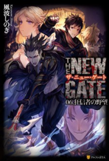

Transcension Academy Chapter 86
The Story of How I ca... Chapter 19
The Amazing Village C... Chapter 30
I Got a New Skill Ever... Chapter 10.2
The Beginning after th... Chapter 175
Catastrophic Necroma... Chpater 41
Fun Territory Defense... Chapter 25-1
Behind the battle of th... Chapter 11-2
Isekai de Cheat Skill w... Chapter 25
Mercenary Enrollment Chapter 164
Study Group
Chapter 234
Only I Know That the... Chapter 46
There Was a Cute Girl... Chpater 32.2

The New Gate
Chapter 98
Kouryakuhon o Kushi... Chapter 55
Eiyuu to Kenja no Tens.. Chapter 10
Shinmai Ossan Bouken... Chapter 49
The Reincarnation Ma... Chapter 112